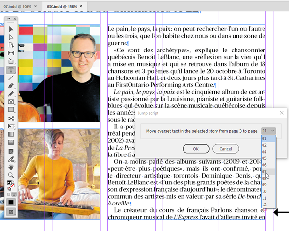
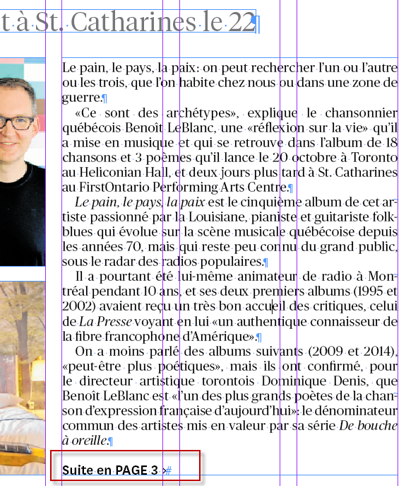
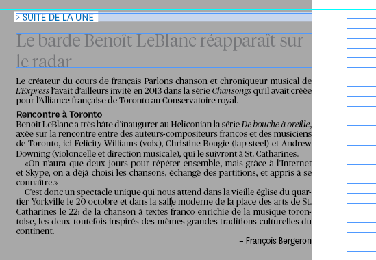

Jump script for book (outdated version)
Version 1.1
The new version is here.
Before

After


The scenario
- User has page A open from his .indb book
- User selects which story in Page A to apply the script
- User launches script
- User selects which page to jump the text to (Page B)
- Script checks to see if Page B is available (that it isn't locked)
- Script selects all the body text starting from the first pararaph of the overriding text from page A
- Script copies the body text selection
- Script opens Page B
- Script pastes body text on Page B in the pasteboard at X:-4.2289in, Y:1.8889in in a frame that is 4.2289in wide
- Script Fits Frame to Content
- Script copies H1 title from Page A
- Script pastes H1 title to page B in a separate frame, Fits frame to content and moves 10pt above the body text frame
- Script creates a new text frame at X:-4.2289in, 10 pt above the title frame, the same width as the body text frame, height of frame is 10 pt. Script inserts text "> Suite de la une" with paragraph style 'category'
- Script goes to Page A and deletes all the body text starting from the first paragraph of the overriding text.
- Script goes to the last paragraph, inserts a return and inserts "Suite en page [Page B page number here]" with 'jump' paragraph style applied
- Script goes to Page B
- End of script
Click here to download the script.
Go back to the main Scripts for L'Express de Toronto Inc. page